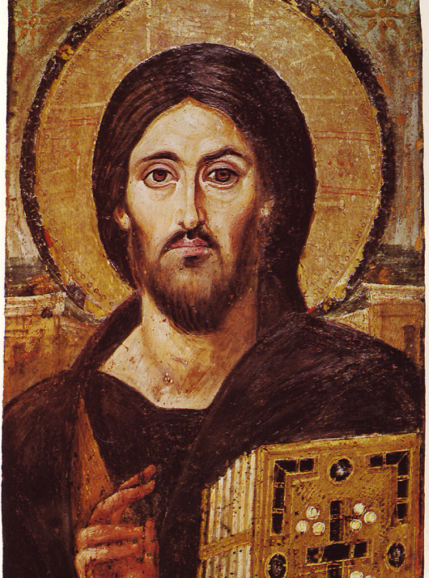

Descubra a fundo a natureza divina e humana do Salvador, o centro da nossa fé e o ápice da Revelação.
Começar Estudo
Um mero profeta histórico? Um bom mestre moral? O Filho de Deus? O Verbo encarnado? A pergunta que Jesus fez aos seus discípulos ("E vós, quem dizeis que eu sou?") ecoa através dos séculos e exige uma resposta de cada um de nós.
Neste curso, exploraremos a Cristologia. Vamos entender a união hipostática (verdadeiro Deus e verdadeiro homem), as profecias do Antigo Testamento que Ele cumpriu, o significado profundo de seus milagres e, principalmente, o mistério redentor da Sua Paixão, Morte e Ressurreição.
As profecias do Antigo Testamento e a expectativa de Israel pela salvação.
O mistério da Encarnação e as heresias cristológicas combatidas pela Igreja.
Uma análise profunda das parábolas e dos milagres durante Seu ministério público.
O sacrifício na cruz, a descida à mansão dos mortos e a glória da Ressurreição.